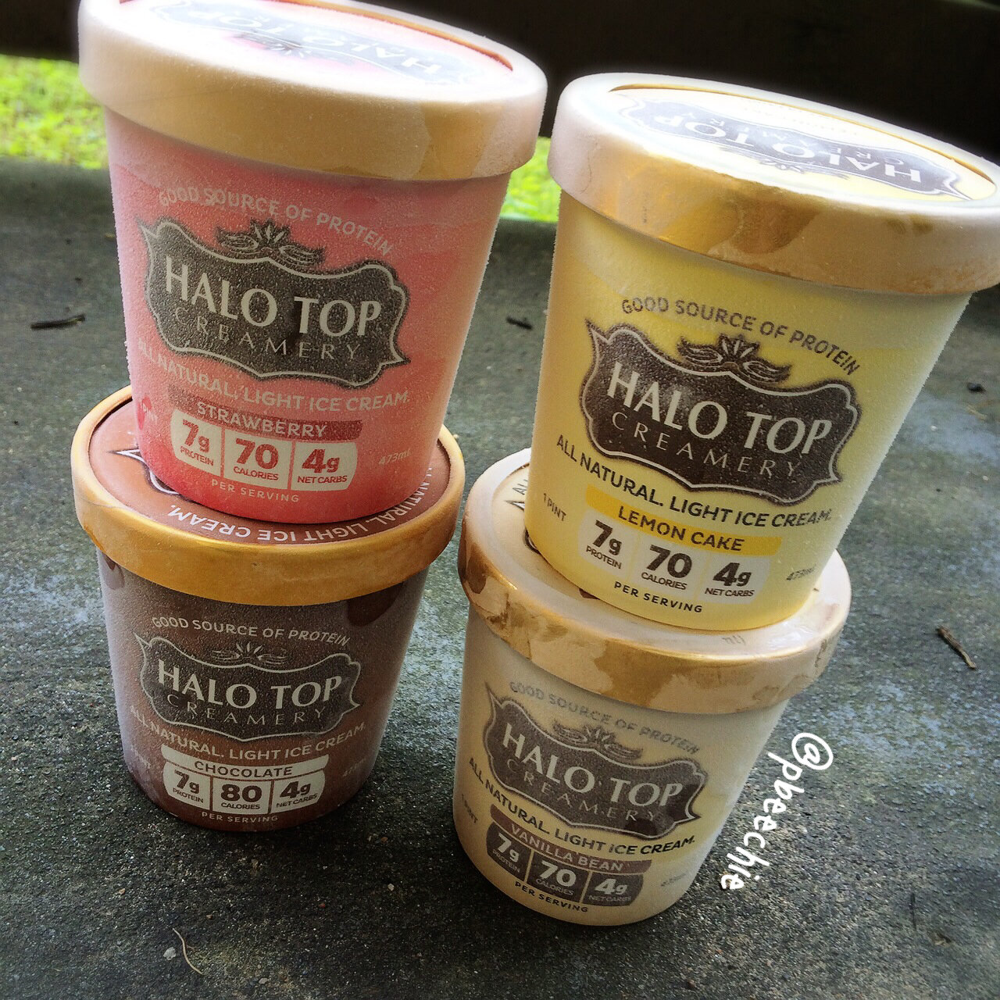
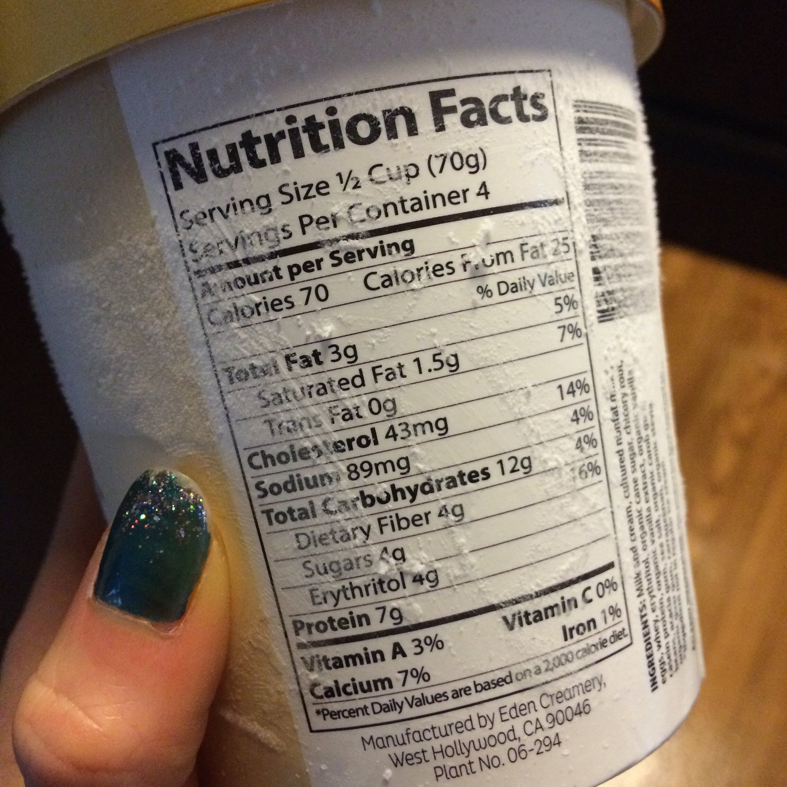
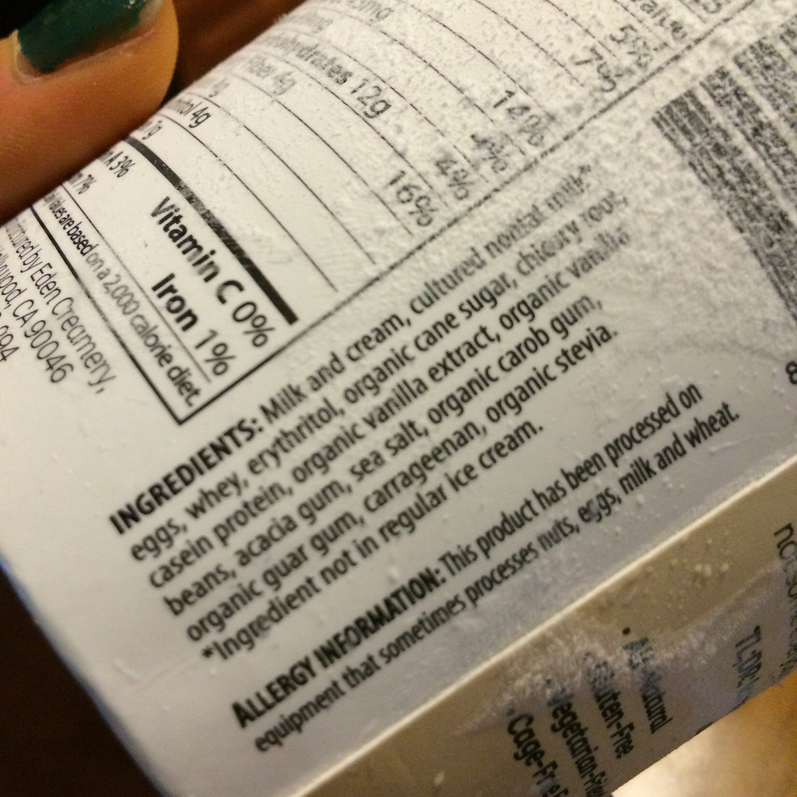

Halo Top Creamery Ice Cream Review

I was sooo excited to try this Halo Top Creamery ice cream! I have been searching EVERYWHERE for it!! This stuff is an all-natural light cream that's protein-rich and sugar-poor. Only 70 calories each serving! I have included the nutritional info and ingredients at the end of this post! Seriously ice cream is one of my two weaknesses (whipped cream being the other, shhhh) so I was stoked to try it!! Many people on Instagram asked for my review on the flavors once I tried it, so here they are!Vanilla Bean: This is like vanilla BEAN. Not just vanilla, vanilla BEAN. I love this taste! Immediately I want to compare this brand to arctic zero (another low calorie protein-rich ice cream) but arctic zero can't even compare to this brand! The taste of Halo Top is insanely delicious! While the arctic zero Vanilla Maple is nearly flavor-less.Lemon Cake: I wasn't too excited to try this flavor, but everyone said it was great and I now know why!! It is my FAVE of the four flavors! It's like lemon meets cheesecake. Aaaaamazing. Lemon Cake is the perfect name for it!Chocolate: I'd say this is my least favorite flavor. But... I don't like normal chocolate ice cream either so :p take that review lightly. I don't know if it's because the flavor of this is off, or I just don't like chocolate ice cream, but I feel it could be a little sweeter.Strawberry: I'm not a big fan of regular strawberry ice cream but this one is great!!The texture of these lavors are all so creamy... They say you need to let it sit to thaw for 3-4 minutes before scooping some ice cream to eat, and I know why. If you don't let it thaw a bit, it has a chalk-y texture. I'm too impatient to wait so I microwave mine for 5-7 seconds. Then the texture is just so perfect; it's not hard and thick like arctic zero is.If you find this stuff, SNAG IT. They're at many Sprouts, Whole Foods, and Earth Fares. They have a store locator on their site to find stores that sell it near you. If not, request it! If you live in Georgia, I know for a fact that the Sprouts location in Dunwoody has it!

